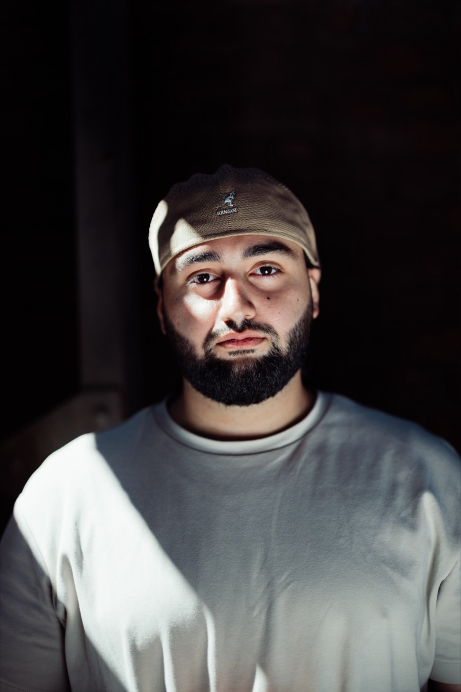
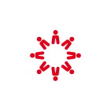
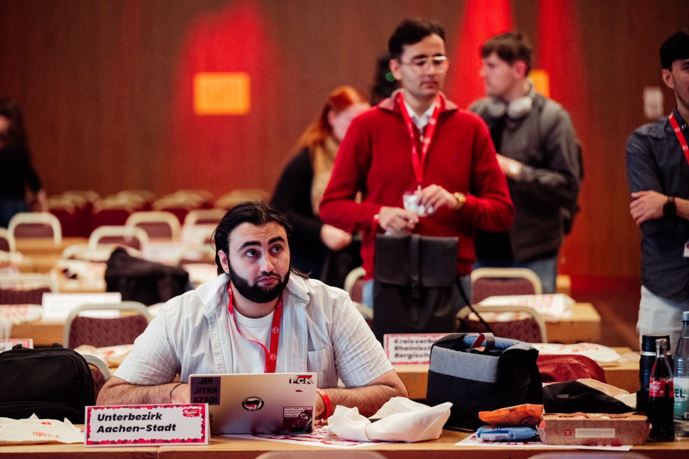
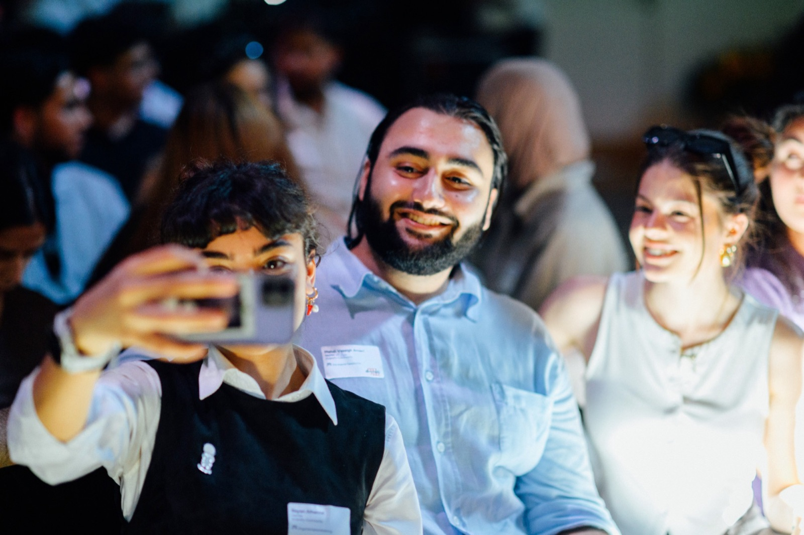
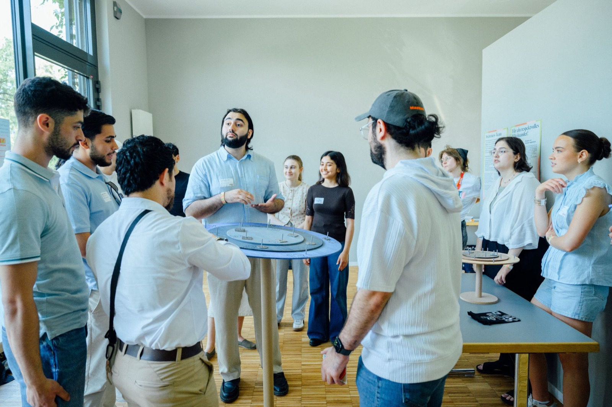

Demokratie verteidigen
Wählen, widersprechen, sich wehren – für diese Rechte werden anderswo Menschen verfolgt. Ich stelle mich gegen Rechtsextremismus und gegen jede Politik, die Menschen ihre Stimme nimmt.
Warum ich nicht zuschauen kann →Vorsitzender der Jusos Aachen · Sachkundiger Bürger in Stadt und StädteRegion Aachen · Politikwissenschaft an der RWTH Aachen
 Aachen, born & raised
Aachen, born & raised
Ich bin in Aachen geboren und aufgewachsen. Das ist meine Stadt – deshalb setze ich mich mit ganzer Kraft für sie ein.
Ich kenne die Menschen und ihre Probleme. Ob an der Haustür, im Park, im Supermarkt, in der Apotheke oder an der Bushaltestelle: Wir kommen ins Gespräch, und schnell wird klar, wo es hakt. Mal ist es der Bus, der zu spät kommt, mal fehlen Parkplätze, mal Kitaplätze. Und oft fehlt genau den Menschen, die am meisten betroffen sind, eine Stimme in der Politik. Das will ich ändern.
Ich studiere Politikwissenschaft an der RWTH Aachen, mit Schwerpunkt Internationale Beziehungen. Denn was in der Welt passiert, kommt auch in Aachen an. Als Grenzstadt im Dreiländereck spüren wir das jeden Tag.
Mir wird oft gesagt, ich soll mich kleiner machen. Ich habe mich aber anders entschieden. In den Räumen, in denen über uns entschieden wird, fehlen oft genau die Menschen, um die es geht. Deshalb mache ich Politik: damit mehr von uns am Tisch sitzen – und nicht dankbar sein müssen, dass sie mitspielen dürfen.
Ich wurde einmal gefragt, warum ich nicht einfach zuschauen kann. Meine Antwort: Ich kann nicht so tun, als wäre Demokratie selbstverständlich. Wir kennen die Geschichten von Menschen, die verfolgt werden, weil sie ihre Meinung sagen oder für Freiheit kämpfen. Menschen sterben für Rechte, die hier vielen normal erscheinen: wählen zu dürfen, die eigene Stimme zu erheben, sich gegen Ungerechtigkeit zu wehren.
Ich kann offen reden, mich einbringen und meine Meinung sagen. Viele andere können das nicht. Genau deshalb kann ich nicht wegschauen, wenn Menschen überhört werden – denn oft sind es gerade die mit den größten Problemen, die am wenigsten gehört werden.
Wählen, widersprechen, sich wehren – für diese Rechte werden anderswo Menschen verfolgt. Ich stelle mich gegen Rechtsextremismus und gegen jede Politik, die Menschen ihre Stimme nimmt.
Warum ich nicht zuschauen kann →
Über 3.000 antimuslimische Vorfälle in einem Jahr sind kein Randphänomen. Ich stelle mich gegen Hass – auf der Straße, im Netz und dort, wo er in Parlamenten wieder salonfähig wird.
Rede bei „Wir sind Aachen“ · CLAIM-Lagebild →Während über Bürgergeld gestritten wird, wächst das Vermögen der Reichsten weiter. Ich will über Verteilung, Bildung und soziale Sicherheit reden – statt Menschen gegeneinander auszuspielen.
Erklärvideos für @brd_wasgeht →Wohnen ist kein Luxus, sondern Existenzminimum. Jede und jeder hat das Recht auf ein Dach über dem Kopf. Wir müssen dafür sorgen, dass Wohnen in Aachen wieder bezahlbar wird – für Studierende, Familien und Rentner:innen.
Kommunalpolitik in Stadt und StädteRegion →Queere Menschen, Migrant:innen, junge Leute – sie gehören in die Mitte der Politik, nicht an den Rand. Niemand soll sich verstecken oder kleiner machen müssen, um dazuzugehören.
CSD mit SPD Queer · AG Migration & Vielfalt →Ob Studium oder Ausbildung: Bildung darf keine Frage des Geldbeutels oder der Herkunft sein. Wir brauchen bezahlbaren Wohnraum für Studierende und Azubis, ein BAföG und eine Ausbildungsvergütung, die zum Leben reichen. Im Studierendenparlament der RWTH setze ich mich mit der Juso-Hochschulgruppe dafür ein, dass die Hochschule alle mitnimmt.
74. Studierendenparlament →„Ich habe nicht das Privileg zu schweigen, solange anderen ihre Stimme genommen wird.“
Mehdi Vassigh Ansari
 Aachener Zeitung · Okt. 2025„Wir sind Aachen“ – Demo gegen Rassismus und für Vielfalt
Aachener Zeitung · Okt. 2025„Wir sind Aachen“ – Demo gegen Rassismus und für Vielfalt
 SPD-AG Migration & Vielfalt · 2026Vorstellung im Bundesvorstand
SPD-AG Migration & Vielfalt · 2026Vorstellung im Bundesvorstand

SPD Aachen · 2025Neuer Vorstand der SPD Aachen-Stadt gewählt meet!-Mercator Europa Tour · 2022Fellow-Profil
meet!-Mercator Europa Tour · 2022Fellow-Profil

Jusos AachenVorstellung im VorstandFotos: Christian van’t Hoen (Demo), Pascal Skwara (Delegiertenbild) · Grafik: SPD-AG Migration & Vielfalt · Fellow-Foto: Stiftung Mercator




Für Veranstaltungen, Gespräche, Presseanfragen – oder einfach, wenn dir in Aachen etwas fehlt.